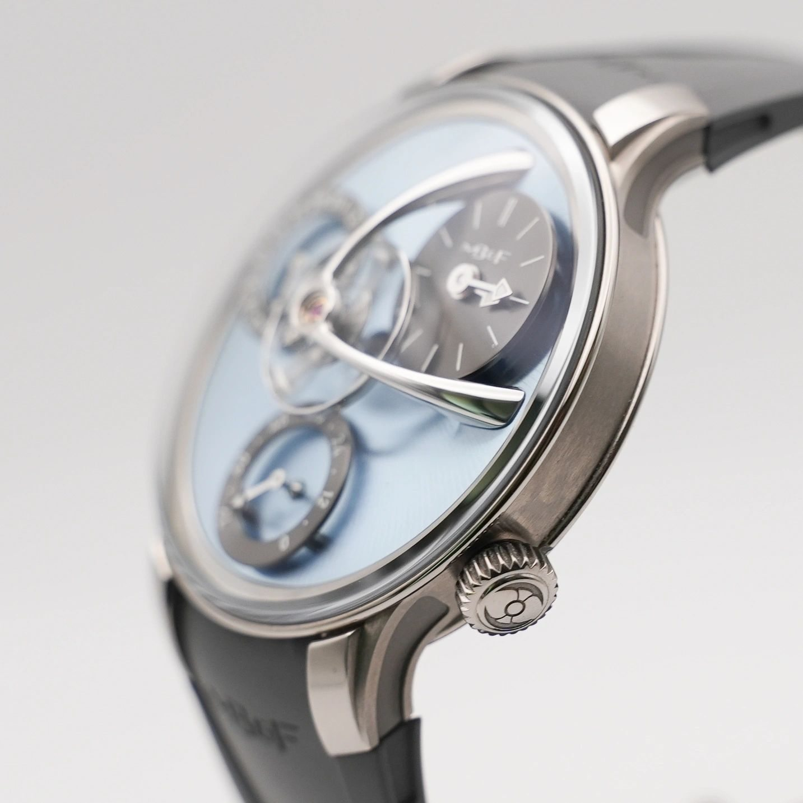

Über uns

Gelernt bei Bucherer.
Gegründet aus Überzeugung.
Hannes Hahn und Minh Vo haben ihr Handwerk dort gelernt, wo Präzision keine Floskel ist: bei Bucherer. Nach Jahren im klassischen Luxusuhrenhandel gründeten die beiden Hahn & Vo — mit einer einfachen Idee: Luxusuhren so zu verkaufen, wie sie selbst gern kaufen würden.
Das heißt konkret: Jede Uhr wird geöffnet, das Werk kontrolliert, Referenz- und Seriennummer dokumentiert, bevor sie in den Verkauf geht. Jeder Preis lässt sich am Markt belegen. Und wer möchte, bekommt seine Uhr nicht anonym im Paket, sondern persönlich übergeben — im siebten Stock über dem Frankfurter Bankenviertel.
Die Spezialität des Hauses: seltene Referenzen aus Südkorea und Japan, wo der Sammlermarkt Stücke bereithält, die in Europa kaum je auftauchen.
Kein Stück verlässt das Haus ohne Öffnung, Werkkontrolle und Dokumentation von Referenz- und Seriennummer.
Beratung per WhatsApp in Minuten, Übergabe im Showroom mit Zeit und Blick — Uhren kauft man nicht im Vorbeigehen.
Wir listen nicht alles, was der Markt hergibt. Jede Uhr im Bestand ist eine bewusste Entscheidung.

Garden Tower,
7. Etage.
Mitten im Bankenviertel, wenige Schritte von der Goethestraße: In ruhiger Atmosphäre sehen, anprobieren und vergleichen Sie in aller Ruhe — nach Terminvereinbarung, ganz ohne Laufkundschaft.